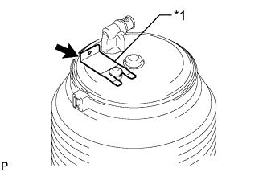
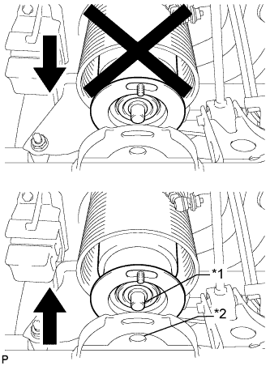
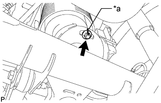

REAR PNEUMATIC CYLINDER > INSTALLATION |
| 1. INSTALL REAR PNEUMATIC CYLINDER ASSEMBLY LH |
|  |
Install the pneumatic cylinder assembly with the clip.
| *1 | Clip |
Connect the height control tube (Click here).
|  |
When using safety stands and a jack:
Jack up the rear axle assembly until the bottom of the pneumatic cylinder assembly touches the rear axle assembly and install the pin at the lower side of the pneumatic cylinder assembly to the hole in the rear axle housing.
| *1 | Pin |
| *2 | Hole |
|  |
Temporarily install the nut.
Align the matchmarks on the rear pneumatic cylinder with the matchmarks on the rear axle housing.
| *a | Matchmark |
Remove the safety stands with care not to extend the pneumatic cylinder assembly when lowering the vehicle until it sits on the ground.
When using a swing arm type lift:
Lower the vehicle until the tires contact the ground, and continue lowering the vehicle slowly until the bottom of the pneumatic cylinder assembly touches the rear axle housing.
Align the seating pin on the cylinder with the hole in the rear axle assembly and install the pneumatic cylinder assembly to the rear axle housing.
Temporarily install the nut.
Align the matchmarks on the rear pneumatic cylinder with the matchmarks on the rear axle housing.
| *a | Matchmark |
Lower the lift carefully so as not to extend the pneumatic cylinder assembly.
Start the engine and replenish the pneumatic cylinder assembly with air.
Tighten the nut.
| 2. INSPECT FOR AIR LEAK |
Inspect for air leaks (Click here).
| 3. INSPECT VEHICLE HEIGHT |
Inspect the vehicle height (Click here).